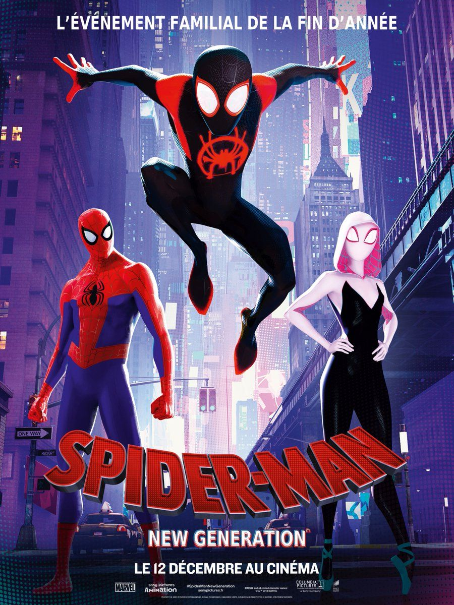
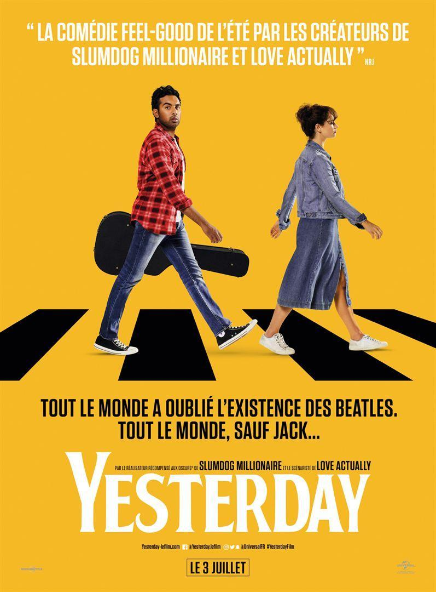

"Spiderman:Into the spiderverse"
まだ中学生で未熟なスパイダーマンである少年が、ベテランのスパイダーマンであるピーター・パーカーの指導の下で成長していく姿を描く

"Aladdin"
魔法のランプを手に入れた青年アラジンはランプの魔人ジーニーの力を借りながらアグラバー王国のジャスミン王女と距離を縮めていく

"Yesterday"
“イエスタデイ＜昨日＞”まで、地球上の誰もがザ・ビートルズを知っていた。 しかし今日、彼らの名曲を覚えているのは世界で一人、ジャックだけ・・・